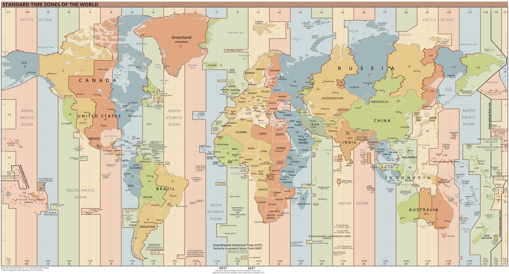

🌍 世界时钟
· World Clock
点击「编辑城市」选择要在地图上显示的城市
显示 0 个城市
✎ 编辑城市

北美洲
南美洲
欧洲
非洲
亚洲
大洋洲
太平洋
大西洋
印度洋
太平洋
UTC−10
UTC−9
UTC−8
UTC−7
UTC−6
UTC−5
UTC−4
UTC−3
UTC±0
UTC+1
UTC+2
UTC+3
UTC+4
UTC+5
UTC+6
UTC+7
UTC+8
UTC+9
UTC+10
UTC+11
UTC+12
选择城市
全选
清空
重置
✕